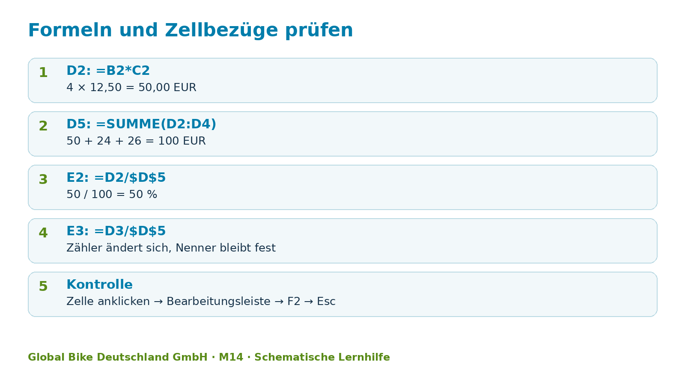
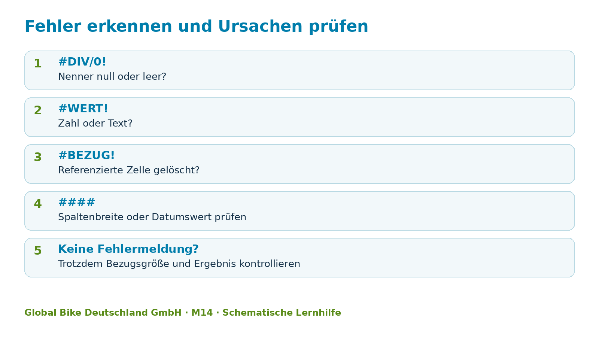
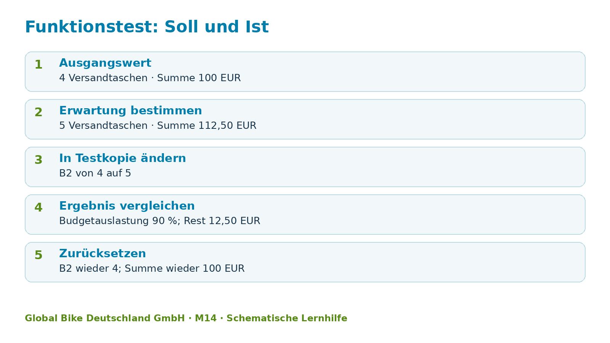
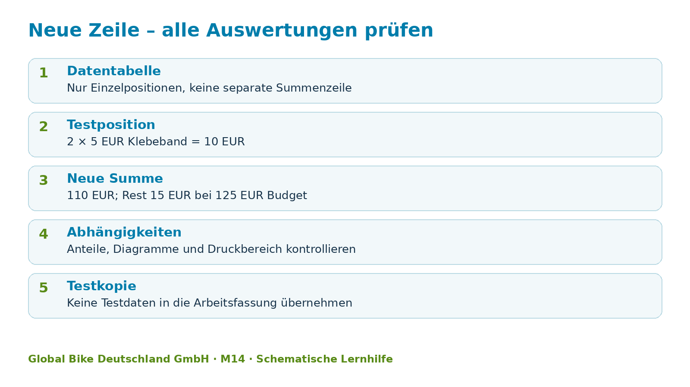
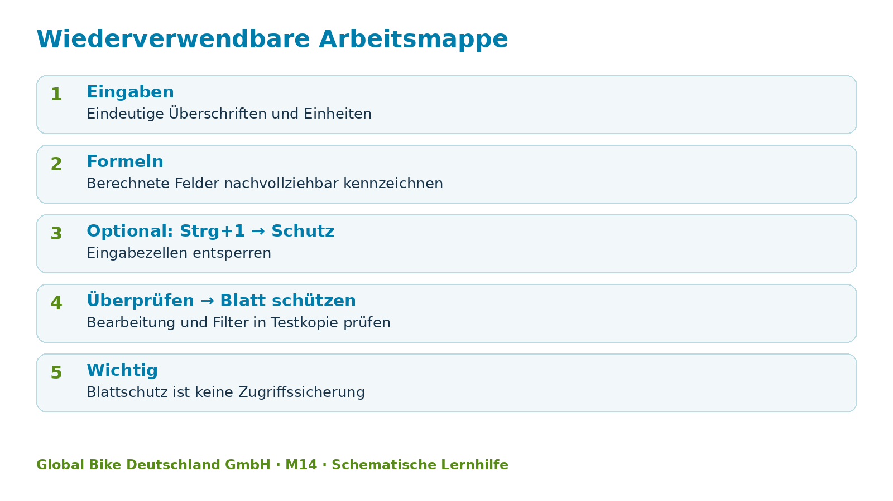

M14 – Qualitätskontrolle und Wiederverwendbarkeit von Excel-Arbeitsmappen
Global Bike Deutschland GmbH – Verwaltung
1. Warum Qualität im Büro wichtig ist
Emma Fuchs benötigt eine zuverlässige Arbeitsmappe für die Büroorganisation im Marktgebiet Nordwest. Eine ansprechend gestaltete Tabelle allein genügt nicht. Falsche Summen, übersehene Fristen oder unvollständige Diagramme können zu falschen betrieblichen Entscheidungen führen. Eine Arbeitsmappe muss deshalb fachlich richtig, technisch funktionsfähig, verständlich und erweiterbar sein.
M14 verbindet M2–M13. Die verbindlichen Daten und Regeln bleiben in M1: Auswertungszeitraum 01.01.–30.06.2027, Stichtag 01.07.2027, Halbjahresbudget 2.500 EUR netto, interne Fristen in Kalendertagen ohne Wochenendverschiebung. Keine Änderung dieser Vorgaben. Ostfriesland bleibt Marktgebiet, kein SAP-Standort.
Die folgenden Beispiele sind eigenständige simulierte Schulungsdaten der Global Bike Deutschland GmbH, keine SAP-Daten und keine Lösung des Hauptfalls. Klickwege beziehen sich auf deutschsprachiges Desktop-Excel unter Windows; je nach Version können Bezeichnungen abweichen.
2. Qualitätsmerkmale einer Arbeitsmappe
| Merkmal | Prüffrage |
|---|---|
| Richtigkeit | Stimmen Eingaben, Formeln und Ergebnisse? |
| Vollständigkeit | Sind alle benötigten Datensätze und Auswertungen enthalten? |
| Konsistenz | Stimmen Einheiten, Zeiträume und Bezugsgrößen überein? |
| Verständlichkeit | Sind Überschriften, Eingabefelder und Ergebnisse eindeutig? |
| Funktionsfähigkeit | Reagieren Berechnungen auf geänderte Eingaben? |
| Erweiterbarkeit | Werden neue Datensätze in Auswertungen berücksichtigt? |
| Lesbarkeit | Sind Tabellen, Diagramme und Druckausgaben verständlich? |
| Verantwortlicher Umgang | Bleiben Originaldaten erhalten und Informationen geschützt? |

Eine Prüfung umfasst Daten, Berechnungen, Auswertungen und Ausgabe. Ein korrekt wirkendes Ergebnis ist kein Beweis für eine richtige Formel.
3. Originaldaten und Arbeitskopien
Die Datei M1_Rohdaten.xlsx ist die Ausgangsquelle. Sie bleibt unverändert. Die selbst entwickelte Arbeitsmappe enthält die aufbereiteten Daten und Auswertungen. Für Funktionstests wird eine zusätzliche Kopie verwendet.
Klick-Anleitung:
- Datei > Speichern unter öffnen (bei Cloud-Dateien gegebenenfalls Kopie speichern).
- Einen geeigneten Ordner wählen.
- Einen eindeutigen Namen vergeben, etwa GB_Bueroorganisation_Test_2027.xlsx.
- Dateityp Excel-Arbeitsmappe (*.xlsx) beibehalten.
- Vor Änderungen den Dateinamen in der Titelleiste prüfen.
- Nach dem Test die unveränderte Arbeitsfassung wieder öffnen. Testergebnisse nicht als betriebliche Ist-Daten übernehmen.
Eine CSV-Datei ist kein Ersatz für eine vollständige XLSX-Arbeitsmappe: Formeln, mehrere Blätter, Diagramme und Formatierungen bleiben dort nicht als Excel-Arbeitsmappe erhalten. Eine PDF-Datei ist eine Ausgabe, keine bearbeitbare Datenbasis.

4. Datenqualität kontrollieren
Vergleich mit der Ausgangsquelle: Vorgangskennzeichen, Datumswerte, Beträge, Status und Zuständigkeiten stichprobenartig und bei kritischen Feldern vollständig prüfen. Fehlende Angaben nicht eigenmächtig ergänzen. Leere Erledigungsdaten bedeuten im Hauptfall nicht erledigt; leere Vorgangsreferenzen bedeuten eigenständige Aufgaben.
Klick-Anleitung für die Sichtkontrolle:
- Datenblatt aktivieren und Überschriften prüfen.
- Daten > Filter aktivieren, sofern nicht bereits als Tabelle eingerichtet.
- Filterpfeil einer Spalte öffnen und auf leere oder unerwartete Einträge prüfen.
- Filter wieder löschen, bevor eine vollständige Übersicht beurteilt wird.
- Datums- und Betragszellen auswählen und über Strg+1 das Zahlenformat kontrollieren.
- Bei Verdacht auf Text statt Zahl den tatsächlichen Zellinhalt und gegebenenfalls die Excel-Fehleranzeige prüfen.
Eine Zahl kann wie eine Währung aussehen und trotzdem als Text gespeichert sein. Umgekehrt verändert ein Währungsformat nicht den zugrunde liegenden Wert. Ein leeres Feld ist nicht automatisch null. Doppelte Beträge oder Datumswerte sind nicht automatisch doppelte Vorgänge. Daten > Duplikate entfernen löscht Datensätze; daher nur nach fachlicher Prüfung in einer Kopie verwenden. Eindeutige Vorgangskennzeichen sind geeigneter als ein bloßer Betragsvergleich.
Optionaler Prüfweg: Start > Bedingte Formatierung > Regeln zum Hervorheben von Zellen > Doppelte Werte auf eine Kennzeichenspalte anwenden. Markierungen sind Prüfhinweise, keine Löschanweisung.
5. Unabhängiges Schulungsbeispiel: Materialkosten
Eine neue Testmappe enthält in A1:E5 die folgende kleine Übersicht. Sie dient ausschließlich dem Erproben von Prüfmethoden.
| A Material | B Menge | C Einzelpreis netto | D Gesamt netto | E Anteil am Gesamt |
|---|---|---|---|---|
| Versandtaschen | 4 | 12,50 € | 50,00 € | 50 % |
| Etiketten | 3 | 8,00 € | 24,00 € | 24 % |
| Ordner | 2 | 13,00 € | 26,00 € | 26 % |
| Gesamt | 100,00 € | 100 % |
In D2 steht =B2*C2, kopiert bis D4. D5 enthält =SUMME(D2:D4). E2 enthält =D2/$D$5, kopiert bis E4. E5 enthält =SUMME(E2:E4). D und C erhalten Währungsformat, E Prozentformat. Die Schulungsbezugsgröße ist 100 EUR, nicht das Halbjahresbudget aus M1.
In G1 steht Schulungsbudget, in G2 der unabhängige Testwert 125 EUR. G3 kann mit =G2-D5 den Restbetrag (25 EUR) berechnen; G4 mit =D5/G2 die Budgetauslastung (80 %). G4 als Prozent formatieren.

6. Formeln und Zellbezüge überprüfen
Eine Formel beginnt mit dem Gleichheitszeichen. Eingabewerte werden referenziert, nicht unnötig in Formeln festgeschrieben. =B2*C2 reagiert auf Änderungen; =4*12,5 enthält feste Zahlen und reagiert nicht auf die Zellen.
Klick-Anleitung:
- Ergebniszelle D2 anklicken und Bearbeitungsleiste ansehen.
- F2 drücken, um die Formel und farbig markierte Bezüge zu sehen.
- Mit Esc ohne Änderung beenden.
- D3 und D4 kontrollieren: relative Bezüge müssen zur jeweiligen Zeile passen.
- E2 bis E4 prüfen: der Zähler ändert sich je Zeile, der Nenner
$D$5bleibt fest. - D5 prüfen: Der Summenbereich umfasst genau D2:D4, nicht die Summenzelle selbst.
- Formeln > Formeln anzeigen wählen, um Formeln statt Ergebnisse zu sehen; erneut wählen, um zurückzukehren.
Eine Formel kann rechnerisch funktionieren, aber fachlich falsch sein. Beispiel =D2/$G$2 berechnet den Anteil am Schulungsbudget statt am Gesamtbetrag. Beide Ergebnisse sind mathematisch möglich, beantworten jedoch unterschiedliche Fragen.
7. Formelüberwachung und Fehlerprüfung
Formeln > Formelüberwachung > Spur zum Vorgänger zeigt Zellen, die in die ausgewählte Formel eingehen. Spur zum Nachfolger zeigt abhängige Formeln. Pfeile entfernen beendet die Darstellung.
Beispiel: D2 auswählen > Spur zum Vorgänger. B2 und C2 sind die Eingaben. D5 auswählen > Spur zum Nachfolger. Die Anteilsformeln und gegebenenfalls die Budgetauswertung hängen davon ab.
Formeln > Fehlerüberprüfung sucht nach bestimmten erkennbaren Problemen. Formeln > Formel auswerten zeigt bei geeigneten Formeln einzelne Berechnungsschritte. Diese Werkzeuge ersetzen keine fachliche Prüfung: Eine falsche Bezugsgröße oder ein unvollständiger, aber gültiger Summenbereich kann ohne Warnung bleiben.

8. Typische Fehler erkennen und beheben
| Anzeige oder Beobachtung | Ursache und Prüfung |
|---|---|
| #DIV/0! | Division durch null oder leere Bezugszelle; Nenner prüfen |
| #WERT! | Ungeeigneter Datentyp, etwa Text in einer Multiplikation; Eingaben prüfen |
| #BEZUG! | Ungültiger Zellbezug, etwa nach Löschen referenzierter Zellen; Quelle wiederherstellen oder Bezug fachlich korrigieren |
| #NAME? | Unbekannter Funktionsname oder Name; Schreibweise prüfen |
| #ZAHL! | Unzulässiger numerischer Wert oder Berechnungsbereich; Argumente prüfen |
| #NV | Gesuchter Wert nicht verfügbar; Quelle und Suchkriterium prüfen |
| #### | Häufig zu schmale Spalte, auch nicht darstellbare negative Datums-/Zeitwerte; Breite und Wert prüfen |
| Formel steht als Text in der Zelle | Textformat, führendes Apostroph oder Formeln-anzeigen-Modus prüfen |
| Ergebnis bleibt unverändert | Fester Zahlenwert statt Formel oder manuelle Berechnung; Formel und Berechnungsoptionen prüfen |
| Zirkelbezug | Formel verweist direkt oder indirekt auf sich selbst; Abhängigkeiten korrigieren |
Bei Textformat: Zelle auf Standard umstellen, anschließend F2 und Eingabetaste, sofern tatsächlich eine Formel eingegeben werden soll. Bei einem führenden Apostroph dieses gezielt entfernen. Keine Fehlermeldung pauschal durch null ersetzen. WENNFEHLER kann Fehler verdecken und ist hier keine notwendige Pflichtfunktion.
Formeln > Berechnungsoptionen > Automatisch prüfen. F9 löst eine Neuberechnung aus. Ein korrektes Ergebnis nach F9 allein beweist noch keine dauerhaft automatische Aktualisierung.

9. Plausibilitätskontrolle
Plausibilität bedeutet, ein Ergebnis auf fachliche Nachvollziehbarkeit zu prüfen. Dazu gehören Überschlagsrechnung, Gegenrechnung, Vergleich mit Ausgangsdaten und Prüfung der Einheit.
Im Schulungsbeispiel: 50 + 24 + 26 = 100 EUR. Die drei Anteile ergeben zusammen 100 %. 100 von 125 EUR sind 80 %, Rest 25 EUR. Gesamtbetrag plus Rest ergeben 125 EUR.
Ein Prozentwert kann über 100 % liegen, etwa bei Budgetüberschreitung. Das ist nicht automatisch ein Fehler. Bei Anteilen an einer vollständig und überschneidungsfrei aufgeteilten Gesamtheit sollte die Summe dagegen ungefähr 100 % ergeben; Rundungsabweichungen der Anzeige sind möglich.
Für den Hauptfall gelten die Bezugsgrößen und Fristregeln aus M1. Keine gesetzlichen Aufbewahrungsfristen aus den internen Simulationsfristen ableiten. Bei Fristen insbesondere Stichtag, Ausgangstag, Fälligkeit und Erledigungsdatum auseinanderhalten. Eine erledigte Aufgabe ist nicht allein deshalb rechtzeitig erledigt.
10. Funktionstest mit geänderten Eingaben
Ein Funktionstest prüft, ob die Arbeitsmappe auf Änderungen wie erwartet reagiert. Zuerst den erwarteten Wert bestimmen, dann ändern, beobachten und vergleichen.
| Test in der Schulungskopie | Erwartung |
|---|---|
| B2 von 4 auf 5 ändern | D2 = 62,50 EUR; D5 = 112,50 EUR |
| Dieselbe Änderung | G3 = 12,50 EUR; G4 = 90 % |
| Dieselbe Änderung | E2 rund 55,56 %, E3 rund 21,33 %, E4 rund 23,11 % |
| B2 auf 4 zurücksetzen | Ausgangssumme 100 EUR |
| G2 von 125 auf 80 ändern | G3 = −20 EUR; G4 = 125 % |
| G2 auf 125 zurücksetzen | Rest 25 EUR, Auslastung 80 % |
| G2 in der Testkopie auf 0 setzen | G4 zeigt bei einfacher Division #DIV/0!; Bezugsgröße fachlich klären |
Ein negativer Restbetrag kennzeichnet in diesem Beispiel eine Überschreitung. Der Nulltest ist absichtlich fehlerauslösend und darf nicht in der Arbeitsfassung verbleiben. Nach jedem unabhängigen Test Ausgangswerte wiederherstellen.

11. Neue Datensätze und wiederverwendbare Tabellen
Eine Excel-Tabelle kann sich beim Hinzufügen von Datensätzen erweitern. Eine normale formatierte Zellfläche ist nicht automatisch eine Excel-Tabelle. Auch bei einer Excel-Tabelle muss überprüft werden, ob Formeln, Diagramme und Druckbereiche tatsächlich mitwachsen.
Klick-Anleitung für eine separate Kopie des Beispiels:
- Nur A1:E4 (Überschriften und Einzelpositionen) markieren; die separate Summenzeile nicht als Datensatz übernehmen.
- Start > Als Tabelle formatieren oder Strg+T wählen.
- Tabellenbereich und Tabelle hat Überschriften bestätigen.
- Unter Tabellenentwurf einen verständlichen Tabellennamen vergeben, beispielsweise Schulung_Material.
- Vor dem Erweiterungstest die separate Summenzeile und ihre Anteilsbezüge so anpassen, dass neue Datensätze nicht mit ihr kollidieren. Alternativ die Summenzeile über Tabellenentwurf > Ergebniszeile einrichten und die Bezugsformeln anschließend prüfen.
- Neue Tabellenzeile über Rechtsklick in der Tabelle > Einfügen > Tabellenzeilen beziehungsweise durch Tab in der letzten Datenzelle ohne aktive Ergebniszeile ergänzen.
- Als Testposition 2 Packungen Klebeband zu 5 EUR eingeben.
- Prüfen, ob die neue Zeilensumme 10 EUR beträgt und die Gesamtsumme 110 EUR erreicht. Bei unverändertem Schulungsbudget 125 EUR beträgt der Rest 15 EUR und die Auslastung 88 %.
- Prüfen, ob alle Anteilsformeln, Diagramme und Druckbereiche die neue Position korrekt berücksichtigen.
Bei strukturierten Tabellenbezügen kann beispielsweise =SUMME(Schulung_Material[Gesamt netto]) verwendet werden, wenn der Tabellenname und die Spaltenüberschrift exakt so lauten. Die Ergebniszeile einer Excel-Tabelle kann standardmäßig TEILERGEBNIS verwenden und auf Filter reagieren; eine Gesamtsumme über alle Datensätze ist davon zu unterscheiden. Strukturierte Bezüge sind eine ergänzende Lernhilfe, keine neue Pflichtkompetenz.
Eine Erweiterung ist erst erfolgreich, wenn die abhängigen Ergebnisse stimmen. Bei festen Zellbereichen kann eine Anpassung erforderlich sein. Neue Zeilen dürfen nicht versehentlich außerhalb der Datentabelle stehen.

12. Sortieren und Filtern kontrollieren
Sortieren verändert die Reihenfolge, Filtern die Sichtbarkeit. Beides darf die Zuordnung der Werte zu ihren Vorgängen nicht zerstören.
- In eine Zelle der vollständigen Liste klicken.
- Daten > Sortieren öffnen, Überschriften und Sortierspalte prüfen.
- Bei einer Aufforderung zur Bereichserweiterung den zusammengehörigen Datenbereich einbeziehen.
- Nach der Sortierung stichprobenartig prüfen, ob Kennzeichen, Datum, Betrag und Status zusammengehören.
- Filter auf eine fachlich sinnvolle Kategorie setzen.
- Prüfen, welche Datensätze sichtbar sind und ob die Auswertung alle oder nur sichtbare Datensätze meint.
- Daten > Löschen in der Gruppe Sortieren und Filtern verwenden, um Filterkriterien zu löschen; dies löscht keine Zellinhalte.
SUMME umfasst auch ausgeblendete Zeilen. Für eine bewusst auf sichtbare Zeilen beschränkte Summe kann beispielsweise =TEILERGEBNIS(109;D2:D4) verwendet werden; 109 ignoriert gefilterte und manuell ausgeblendete Zeilen. Diese Funktion ist eine freiwillige Vertiefung. Im Schulungsbeispiel ergeben Etiketten und Ordner zusammen 50 EUR, während die Gesamtsumme aller drei Positionen 100 EUR bleibt. Diagramme können gefilterte oder ausgeblendete Daten anders behandeln als die Gesamtsumme; deshalb die tatsächliche Anzeige kontrollieren.
13. Diagramme fachlich und technisch überprüfen
Ein Diagramm muss zur betrieblichen Fragestellung passen. Säulen oder Balken eignen sich häufig für Kategorienvergleiche, Linien für zeitliche Entwicklungen, Kreisdiagramme für wenige nichtnegative Anteile einer vollständigen Gesamtheit.
Klick-Anleitung:
- Diagramm anklicken > Diagrammentwurf > Daten auswählen.
- Datenbereich, Reihen und Kategorien prüfen. Im Schulungsbeispiel gehören die drei Einzelpositionen, nicht die Summenzeile, in einen Kategorienvergleich.
- Diagrammentwurf > Diagrammtyp ändern, wenn die Darstellung nicht zur Frage passt.
- Diagrammelemente hinzufügen: verständlicher Titel, Achsentitel und Einheiten bei Achsendiagrammen, Legende soweit erforderlich; beim Kreisdiagramm stattdessen geeignete Kategorien- oder Datenbeschriftungen.
- Achsenskalierung prüfen. Bei Säulen und Balken ist ein Nullbeginn für unverzerrte Längenvergleiche in der Regel sinnvoll.
- In der Testkopie einen Ausgangswert ändern und die Aktualisierung beobachten.
- Nach Rücksetzen der Testwerte prüfen, ob das Diagramm wieder die Ausgangsdaten zeigt.
14. Druckaufbereitung und Weitergabe
M13 erläutert die Bedienung im Detail. Für die Abschlusskontrolle: Datei > Drucken, richtige Blätter, Druckbereich, Ausrichtung, Skalierung und Seitenzahl prüfen. Bei mehrseitigen Listen Drucktitel kontrollieren. Keine einseitige Ausgabe erzwingen, wenn dadurch die Schrift unlesbar wird. Ein optional exportiertes PDF separat öffnen und mit der aktuellen XLSX-Datei vergleichen. Vertrauliche Informationen nicht allein durch Ausblenden schützen.
Die Arbeitsmappe bleibt das bearbeitbare Handlungsergebnis beziehungsweise Bestandteil des gewählten Lernpakets. Eine PDF-Ausgabe ist keine zusätzliche Pflichtabgabe.
15. Eingaben und Formeln für andere Mitarbeitende verständlich machen
Eingabezellen und berechnete Zellen können durch eindeutige Überschriften, eine kurze Legende und zurückhaltende Formatierung unterschieden werden. Farben nicht als einziges Unterscheidungsmerkmal verwenden. Blattnamen sollen den Inhalt erkennen lassen. Einheiten, Stichtag und Bezugsgrößen müssen eindeutig sein.
Optionaler Schutz vor versehentlichen Änderungen:
- In einer Testkopie die vorgesehenen Eingabezellen markieren.
- Strg+1 > Schutz > Gesperrt deaktivieren.
- Formelzellen gesperrt lassen beziehungsweise deren Einstellung prüfen.
- Überprüfen > Blatt schützen wählen und nur benötigte Aktionen erlauben.
- Eingabeänderung und Formeländerung testen.
- Prüfen, ob Sortieren, Filtern und Erweitern weiterhin wie benötigt möglich sind.
- Überprüfen > Blattschutz aufheben, wenn die Bearbeitung sonst behindert wird.
Die Einstellung Gesperrt wirkt erst bei aktivem Blattschutz. Blattschutz ist kein verlässlicher Schutz vertraulicher Daten und keine Verschlüsselung. Kein Passwort ohne vereinbarte betriebliche Regelung setzen. Schutzfunktionen sind optional; sie dürfen die Wiederverwendbarkeit und die Prüfung durch die Lehrkraft nicht behindern.

16. Freiwilliges Prüfprotokoll
Ein kurzes Protokoll unterstützt die selbstständige Fehlersuche. Es ist eine freiwillige Arbeitshilfe und keine zusätzliche Pflichtabgabe.
| Prüfgegenstand | Erwartung | Beobachtung | Maßnahme / erneut geprüft |
|---|---|---|---|
| Ausgangsdaten | Übereinstimmung mit Quelle | ||
| Formel und Zellbezug | Fachlich richtige Berechnung | ||
| Eingabeänderung | Erwartete Aktualisierung | ||
| Neue Zeile | Vollständige Auswertung | ||
| Filter und Diagramm | Passende Bezugsgröße | ||
| Druckvorschau | Lesbare vollständige Ausgabe |
Bei Abweichungen zunächst die Ursache suchen, dann gezielt korrigieren und erneut testen. Nicht mehrere unbekannte Änderungen gleichzeitig durchführen. Bei fehlenden betrieblichen Angaben Rücksprache mit der Lehrkraft halten.
17. Abschlusscheck für das gewählte Lernpaket

Die Lernenden wählen geeignete Prüfmethoden selbstständig. Keine zusätzliche Präsentationspflicht, keine KI, keine neue Bewertung neben den vereinbarten Verfahren.
18. Freiwillige Selbstkontrolle
- Warum bleibt die Rohdatendatei unverändert?
- Worin unterscheiden sich Zellwert und Zahlenformat?
- Warum ist ein leerer Erledigungstermin nicht automatisch null?
- Wie lässt sich eine Formel in der Bearbeitungsleiste prüfen?
- Was bedeutet
$D$5? - Warum darf D5 nicht in seiner eigenen SUMME enthalten sein?
- Was zeigt Spur zum Vorgänger?
- Was bedeutet #DIV/0!?
- Was kann #### bedeuten?
- Warum ist ein Ergebnis ohne Fehlermeldung nicht automatisch richtig?
- Wie wird automatische Berechnung kontrolliert?
- Wie hoch ist die ursprüngliche Schulungssumme?
- Welche Summe entsteht bei fünf Versandtaschen?
- Welche Budgetauslastung entsteht bei dieser Änderung?
- Was bedeutet ein negativer Budgetrest?
- Was ist nach Hinzufügen einer Tabellenzeile zu prüfen?
- Was unterscheidet Sortieren von Filtern?
- Warum kann SUMME mehr Werte enthalten als sichtbar sind?
- Warum gehört die Summenzeile nicht in den Kategorienvergleich?
- Warum genügt ein PDF nicht als bearbeitbare Arbeitsmappe?
- Wann wirkt die Einstellung Gesperrt?
- Warum ist Blattschutz keine Zugriffssicherung?
- Warum werden Testwerte zurückgesetzt?
- Was geschieht nach einer Fehlerkorrektur?
Kontrollhinweise
- Sie bleibt unveränderte Vergleichsgrundlage.
- Wert ist der gespeicherte Inhalt, Format seine Darstellung.
- Im Hauptfall bedeutet leer nicht erledigt.
- Zelle anklicken; Bearbeitungsleiste ansehen, gegebenenfalls F2 und Esc.
- Absoluter Bezug auf Spalte D und Zeile 5.
- Es entsteht ein Zirkelbezug.
- Zellen, von denen die ausgewählte Formel abhängt.
- Division durch null beziehungsweise leeren Nenner.
- Zu schmale Spalte oder nicht darstellbarer Datums-/Zeitwert.
- Auch gültige Formeln können fachlich falsche Bezüge enthalten.
- Formeln > Berechnungsoptionen > Automatisch.
- 100 EUR.
- 112,50 EUR.
- 90 %.
- Budgetüberschreitung.
- Formeln, Summen, Anteile, Diagramme und Druckbereich.
- Reihenfolge ändern gegenüber Datensätze ausblenden.
- SUMME berücksichtigt auch ausgeblendete Werte.
- Sonst werden die Einzelwerte und ihre Summe gemeinsam dargestellt und die Aussage verzerrt.
- Es enthält keine bearbeitbaren Excel-Formeln.
- Bei aktivem Blattschutz.
- Er verhindert vor allem versehentliche Bearbeitung, nicht zuverlässig unberechtigten Datenzugriff.
- Damit die verbindlichen Ausgangsdaten und Ergebnisse erhalten bleiben.
- Erneut prüfen und Ergebnis mit der Erwartung vergleichen.
19. Weiterführende Materialien
M2–M13 bleiben als Nachschlagewerke verfügbar. M15 dient dem freiwilligen Fachbegriff-Check. M16 kann durch die Lehrkraft getrennt zur fachlichen Nachbereitung bereitgestellt werden, M17 das Feedback. M14 ersetzt weder die Auswahl des Lernpakets noch die vereinbarten Arbeitsaufträge der vollständigen Handlung.